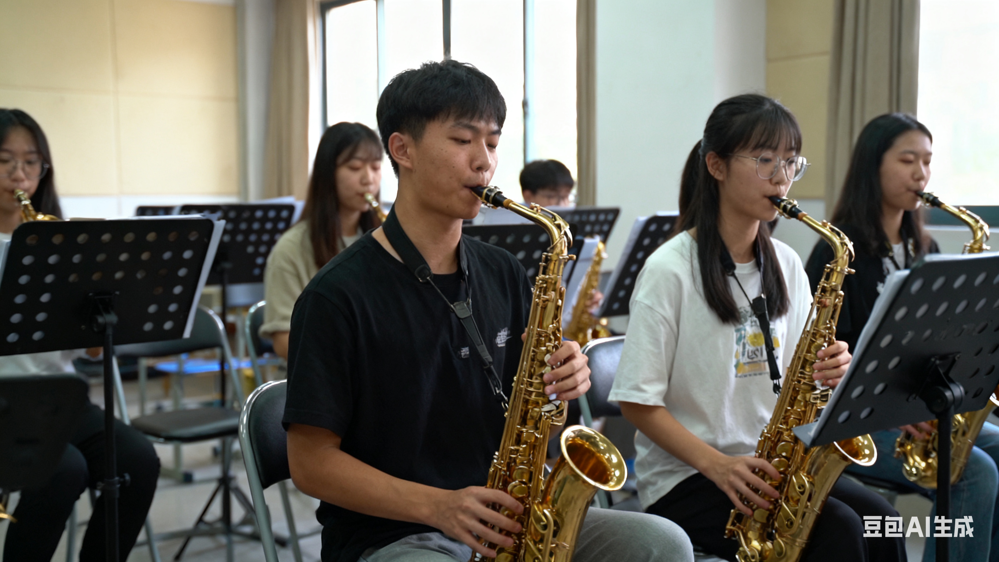

一、社团简介
在大学充满活力的校园文化版图中，萨克斯社团犹如一缕悠扬的旋律，
自 2015 年成立以来，始终以 “用萨克斯传递热爱，以音乐连接你我” 为宗旨，汇聚了一群对萨克斯满怀热忱的学子。
社团现有注册社员 218 人，涵盖古典萨克斯、流行萨克斯、爵士萨克斯等多个领域，无论是零基础的音乐爱好者，还是具备一定演奏基础的学子，都能在这里找到属于自己的音乐天地。
经过八年的发展，社团已成为校内极具影响力的音乐类社团，先后荣获 “校级优秀社团”“校园文化建设先进集体” 等荣誉，累计培养萨克斯演奏爱好者 600 余人，成为校园里传递音乐梦想的重要力量。
二、活动安排
为了让大家更好地了解吉他社的日常，本学期计划安排如下几项主要活动。 具体时间可能会根据学校统一安排略作调整，详情请关注社团通知。
学生成绩表
| 活动名称 | 活动时间 | 活动地点 | 负责人
|
| 新成员见面会 | 3 月第 2 周 周五晚 | 学生活动中心 音乐教室 201 | 张强
|
| 吉他基础教学公开课 | 3 月第 3 周 周六下午 | 李娜
|
| 校园草地弹唱会 | 4 月第 2 周 周日 | 操场东侧草坪 | 王浩
|
| 期末专场音乐会 | 6 月第 1 周 周六晚 | 大学生活动中心 大礼堂 | 刘芳
|
上表仅列出了部分代表性活动，日常还会有小型即兴合奏、经验分享等活动， 欢迎有想法、有创意的同学参与策划。
三、社团风采
下面是一张往届校园音乐会的照片示意。点击图片，可以查看更详细的活动介绍页面。

图中为上学期教学课程上社团成员的集体演出场景。
平时的训练与排练，都会在正式演出中得到充分的展示机会。
宣传视频示例
下面示例演示如何在页面中嵌入一段吉他社宣传视频。
返回主页
四、社员故事
（一）从 “音乐小白” 到舞台新星
林同学的蜕变之路“刚入学时，我对萨克斯一无所知，只是在一次校园活动中偶然听到萨克斯演奏，就被那优美的声音深深吸引了。”2023 级会计学专业的林同学回忆道。加入社团后，他从最基础的拿琴姿势、呼吸方法学起，由于没有音乐基础，刚开始练习时经常出现气息不稳、指法错误等问题，甚至一度想过放弃。但社团指导老师的耐心鼓励和学长学姐的热心帮助，让他重新燃起了坚持下去的信心。为了提高演奏水平，他每天坚持练习 2 小时以上，遇到不懂的问题就及时向老师和学长学姐请教，还经常观看优秀萨克斯演奏家的视频，学习他们的演奏技巧和情感表达。经过一年的努力，林同学的演奏水平有了质的飞跃，不仅能够熟练演奏多首经典曲目，还在 2024 年社团 “萨克斯风・校园之声” 独奏大赛中获得了流行组三等奖。“社团就像一个温暖的大家庭，在这里，我不仅学会了萨克斯演奏，还收获了成长和自信，未来我会继续坚持这份热爱，在音乐的道路上越走越远。” 林同学坚定地说。
（二）以音乐为纽带，传递公益力量
陈同学的爱心之旅2021 级临床医学专业的陈同学是社团的公益活动负责人，也是公益演出的积极参与者。“第一次去养老院演出时，看到老人们脸上洋溢的笑容，我就深深感受到了音乐的力量。” 陈同学说。从那以后，只要有公益演出活动，他总会积极组织社员参与，还会根据演出对象的特点精心挑选曲目。为了让养老院的老人们更容易产生共鸣，他和社员们一起改编了《洪湖水浪打浪》《歌唱祖国》等经典老歌的萨克斯版本；为了让儿童福利院的孩子们感受到快乐，他们特意学习了《小星星》《机器猫》等欢快曲目的演奏技巧。三年来，陈同学累计组织并参与公益演出 42 场，服务时长超 600 小时。“能用自己喜欢的乐器为别人带去温暖和快乐，是一件非常有意义的事情。未来，我会继续带领社团成员开展更多公益演出活动，让萨克斯声传递更多爱心。”
（三）跨界合作，碰撞音乐火花
“萨克斯 +” 组合的创新探索由萨克斯手张同学、钢琴手吴同学、吉他手郑同学组成的 “风之韵” 组合，是社团内极具创新精神的跨界音乐组合。“我们想打破乐器之间的界限，探索萨克斯与其他乐器搭配的更多可能性。” 张同学说。三人来自不同专业，却因对音乐的热爱和创新的想法走到了一起。为了创作一首融合萨克斯、钢琴、吉他的原创作品，他们经常利用课余时间在排练室讨论、尝试，从曲风确定、旋律创作到编曲设计，每一个环节都反复打磨。在创作《青春旅途》这首作品时，他们原本想以流行曲风为主，但在排练过程中，发现加入一些爵士元素后，音乐更具感染力，于是又重新调整编曲方案。经过两个多月的努力，《青春旅途》终于完成，并在社团年度专场音乐会上首次演出，赢得了师生的一致好评。随后，这首作品还在 “XX 省大学生原创音乐大赛” 中获得了器乐类三等奖。“在这个组合里，我们不仅提升了自己的演奏水平，还学会了团队协作和创新思考，这种跨界合作的经历让我们受益匪浅。” 吴同学笑着说。
返回主页
五、在线报名